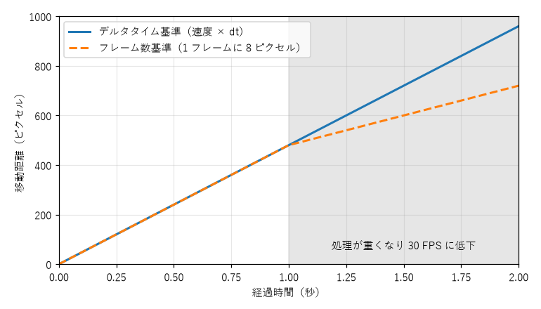
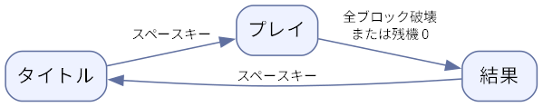

6. ゲームプログラミングの基礎
この章では、ゲームの種類やゲームエンジンを問わず共通する、ゲームプログラムの基本的な仕組みを説明する。コードの例には pygame-ce を使うが、考え方はほかのツールでも同じである。
6.1. ゲームループ
業務アプリケーションや GUI アプリケーションの多くはイベント駆動で動く。ボタンが押されるなどのイベントが起きるまで待機し、起きたら対応する処理を実行する。何も起きなければ何もしない。
一方、ゲームは何も入力が無くても敵が動き、時間が流れる。そのため、ゲームのプログラムは「入力を受け取る」「状態を更新する」「画面を描く」という処理を、1 秒間に数十回の速さで延々と繰り返す。この繰り返しをゲームループと呼び、ループ 1 回分をフレームと呼ぶ。
![digraph gameloop {
node [shape=box, style="rounded,filled", fillcolor="#eef2ff", color="#6070a0"];
edge [color="#6070a0"];
init [label="初期化", shape=ellipse, fillcolor="#f0f0f0"];
input [label="入力\n（キー、マウス、閉じるボタン）"];
update [label="更新\n（移動、当たり判定、得点）"];
draw [label="描画\n（画面に反映）"];
wait [label="待機\n（フレームレートの調整）"];
quit [label="終了処理", shape=ellipse, fillcolor="#f0f0f0"];
init -> input -> update -> draw -> wait;
wait -> input [label="次のフレーム", fontsize=10];
input -> quit [label="終了要求", fontsize=10, style=dashed];
}](_images/graphviz-1725b454c92cc368e62e9d32dc1dc3fae3432b93.png)
図 6.1 ゲームループ
pygame-ce で最小のゲームループを書くと次のようになる。制作実践：ブロック崩しを作るの Step 1 のコードである。
1def main() -> None:
2 pygame.init()
3 screen = pygame.display.set_mode((SCREEN_WIDTH, SCREEN_HEIGHT))
4 pygame.display.set_caption("Step 1: Window")
5 clock = pygame.time.Clock()
6
7 running = True
8 while running:
9 # フレームレートを一定に保つため、必要なら待機する
10 clock.tick(FPS)
11
12 # 1. 入力: 溜まっているイベントをすべて処理する
13 for event in pygame.event.get():
14 if event.type == pygame.QUIT:
15 running = False
16
17 # 2. 更新: まだ動かすものは無い
18
19 # 3. 描画: 画面を塗りつぶしてから表示に反映する
20 screen.fill(BG_COLOR)
21 pygame.display.flip()
22
23 pygame.quit()
8 行目の
while running:がゲームループである。10 行目の
clock.tick(FPS)は、前回の呼び出しから 1/60 秒が経つまで待機し、ループが速く回りすぎないようにする。ループの先頭に置いているが、前のフレームの最後に待機するのと同じことである。13 行目から 15 行目で、溜まっているイベントをすべて取り出す。ウィンドウの閉じるボタンが押されると
pygame.QUITイベントが届くので、ループを終える。20 行目と 21 行目で、画面を塗りつぶしてから表示に反映する。
ゲームエンジンを使う場合、ゲームループはエンジンの内部にあり、開発者が直接書くことは少ない。その代わり、Unity の Update メソッドや Godot の _process メソッドのように、毎フレーム呼ばれる関数に処理を書く。名前は違っても、裏で回っている仕組みはここで示したものと同じである。
6.2. フレームレートとデルタタイム
1 秒間に何フレーム処理するかをフレームレートと呼び、単位には FPS（Frames Per Second）を使う。60 FPS なら、1 フレームに使える時間は約 16.7 ミリ秒である。この時間内に更新と描画を終えられないと、フレームレートが下がる。これを処理落ちと呼ぶ。
物を動かすとき、「1 フレームに 8 ピクセル動かす」と書くと、移動の速さがフレームレートに左右されてしまう。処理落ちすると遅くなり、性能の高いモニターで 120 FPS で動かすと 2 倍速になる。
そこで、前のフレームからの経過時間（デルタタイム、\(\Delta t\)）を求め、速度に掛けて移動量を計算する。位置を \(x\)、速度を \(v\)（ピクセル毎秒）とすると、次のようになる。
こうすると、フレームレートが変わっても 1 秒あたりの移動量は \(v\) のまま変わらない。図 6.2 は、毎秒 480 ピクセルで物を動かしている途中で、処理が重くなり 30 FPS に落ちた場合の比較である。フレーム数を基準にした移動は処理落ちと同時に遅くなるが、デルタタイムを基準にした移動は同じ速さで進み続ける。

図 6.2 処理落ちしたときの移動距離の比較
pygame-ce では、clock.tick() の戻り値が前回の呼び出しからの経過時間（ミリ秒）なので、1000 で割れば秒単位のデルタタイムになる。
1dt = min(clock.tick(FPS) / 1000, MAX_DT)
2paddle.rect.x += direction * PADDLE_SPEED * dt
1 行目では、デルタタイムに上限（MAX_DT、本書では 1/30 秒）を設けている。ウィンドウをドラッグしている間などはゲームループが止まり、再開したときのデルタタイムが非常に大きくなる。上限が無いと、ボールが 1 フレームで壁の向こうまで移動してしまう（後述するすり抜け）。
デルタタイムを掛ける方法は手軽だが、フレームレートによって計算結果がわずかに変わる。厳密な再現性が必要な物理演算や、ネットワーク対戦のように全員の計算結果をそろえる必要がある場合は、更新を常に一定の時間刻みで行う固定タイムステップを使う。
1STEP = 1 / 60 # 更新 1 回で進める時間（秒）
2accumulator = 0.0 # まだ更新に使っていない時間
3
4while running:
5 accumulator += min(clock.tick() / 1000, 0.25)
6 handle_events()
7 while accumulator >= STEP:
8 update(STEP) # 常に同じ時間刻みで更新する
9 accumulator -= STEP
10 draw()
経過した時間を accumulator に溜め、STEP ずつ取り出して更新する。描画が遅れても、更新は決まった刻みで必要な回数だけ行われる。この方法の詳細は、参考文献の「Fix Your Timestep!」が詳しい。本書のサンプルは単純さを優先し、デルタタイムを掛ける方法を使う。
6.3. 座標系
pygame-ce を含む多くの 2D ライブラリーでは、画面の左上が原点 \((0, 0)\) で、x 軸は右向き、y 軸は下向きが正である。数学で使う座標系とは y 軸の向きが逆なので、「上に動かす」には y を減らす。
クラス |
用途 |
|---|---|
|
整数の座標を持つ長方形。位置、大きさ、当たり判定を扱う |
|
小数の座標を持つ長方形（pygame-ce で追加された）。デルタタイムを掛けた細かな移動量を切り捨てずに保持できる |
|
2 次元ベクトル。速度や向きを表し、回転や長さの計算ができる |
Rect と FRect は、left、right、top、bottom、center、midbottom などの属性で、辺や中心の座標を読み書きできる。例えば rect.midbottom = paddle.rect.midtop と書けば、パドルの上辺の中央に、ボールの下辺の中央をそろえられる。
Rect で小さな移動を繰り返すと問題が起きる。例えば毎秒 30 ピクセルで動かす場合、60 FPS では 1 フレームの移動量が 0.5 ピクセルとなり、整数座標に切り捨てられて少しも動かない。動く物の位置には FRect か Vector2 を使う。
6.4. 入力処理
キーボードの入力を受け取る方法は 2 つある。
方法 |
分かること |
向いている用途 |
|---|---|---|
イベント（ |
キーが押された瞬間、離された瞬間 |
ジャンプ、発射、決定など、1 回押すごとに 1 回起きる動作 |
状態の取得（ |
今この瞬間にキーが押されているかどうか |
移動など、押している間ずっと続く動作 |
サンプルゲームでは、ボールの発射にイベントを、パドルの移動に状態の取得を使っている。発射を状態の取得で判定すると、キーを押している間に何フレームも続けて発射されてしまう。
6.5. 描画
ゲームの描画は、毎フレーム画面全体を塗りつぶし、すべての物を描き直すのが基本である。描いた順に上に重なるので、背景、ブロック、パドルとボール、スコアなどの文字の順に描く。
描画中の未完成の画面がそのまま表示されると、ちらつきの原因になる。そこで、表示用とは別の画面（バッファー）に描いてから、完成した画面を一度に表示する。この手法をダブルバッファリングと呼び、pygame.display.flip() が表示の切り替えに当たる。
6.6. 当たり判定
物と物が重なったかどうかを調べる処理を当たり判定（衝突判定）と呼ぶ。2D ゲームで最もよく使うのは、軸に平行な長方形どうしの判定（AABB、Axis-Aligned Bounding Box）である。長方形 \(A\) と \(B\) が重なる条件は次のとおりである。
つまり、x 方向と y 方向の両方で区間が重なっていれば、長方形どうしが重なっている。pygame-ce では rect.colliderect(other) がこの判定を行い、rect.collidelist(rects) は重なっている長方形の番号をリストから探す。
円どうしの判定は、中心間の距離が半径の和より小さいかどうかで行う。中心を \((x_1, y_1)\) と \((x_2, y_2)\)、半径を \(r_1\) と \(r_2\) とすると、条件は次のようになる。
平方根を計算しなくて済むよう、両辺を 2 乗した形で比較するのが定石である。
当たり判定は、重なったかどうかを調べるだけでは終わらない。重なっていたら、めり込んだ分を押し戻し、跳ね返りなどの反応を起こす必要がある。具体的な方法は制作実践：ブロック崩しを作るの Step 4 で説明する。
また、毎フレームの位置だけで判定する方法には、速く動く物が薄い物を通り抜けてしまうすり抜けという弱点がある。1 フレームの移動量が相手の厚みより大きいと、あるフレームでは手前にいて、次のフレームでは向こう側にいる、ということが起きる。対策には、速度やデルタタイムに上限を設ける、1 フレームの移動を細かく分割して判定する、移動の軌跡全体で判定する、などの方法がある。
6.7. シーンと状態遷移
ゲームには、タイトル画面、プレイ画面、結果画面のように、入力への反応や描く内容がまったく異なる画面がある。こうした画面の単位をシーンと呼ぶ。シーンの切り替えは、状態と遷移の規則で振る舞いを表すステートマシン（状態機械）として設計すると整理しやすい。

図 6.3 ブロック崩しのシーンの遷移
シーンごとにクラスを分け、各クラスに入力処理・更新・描画のメソッドを持たせると、「プレイ中だけ有効な処理」のような条件分岐がゲームループから消え、コードが読みやすくなる。具体的な実装は制作実践：ブロック崩しを作るの Step 6 で示す。
6.8. 乱数
敵の出現位置やアイテムの出現など、ゲームでは乱数を多用する。Python では random モジュールを使う。
不具合の調査やテストでは、毎回同じ乱数列が出ると便利である。random.seed(1) のように乱数のシード（種）を固定すると、同じ乱数列を再現できる。シードを記録しておけば、「たまにしか起きない不具合」を同じ条件で再現できる。